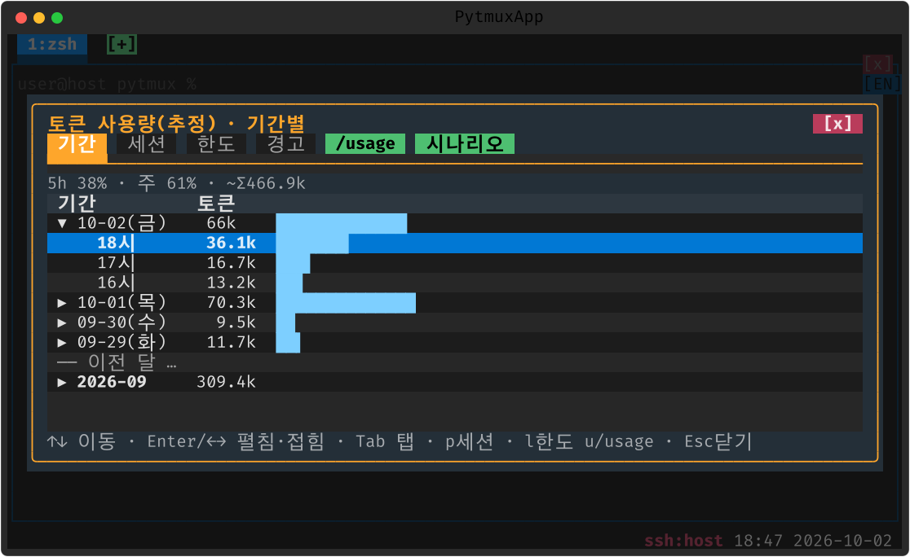
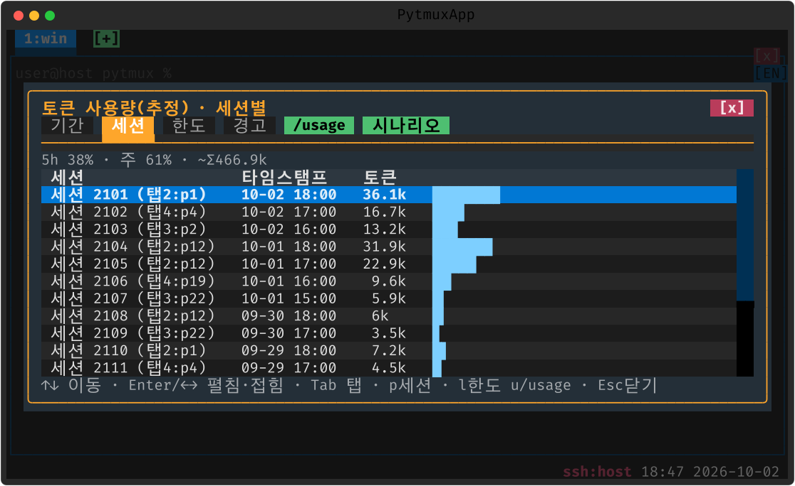
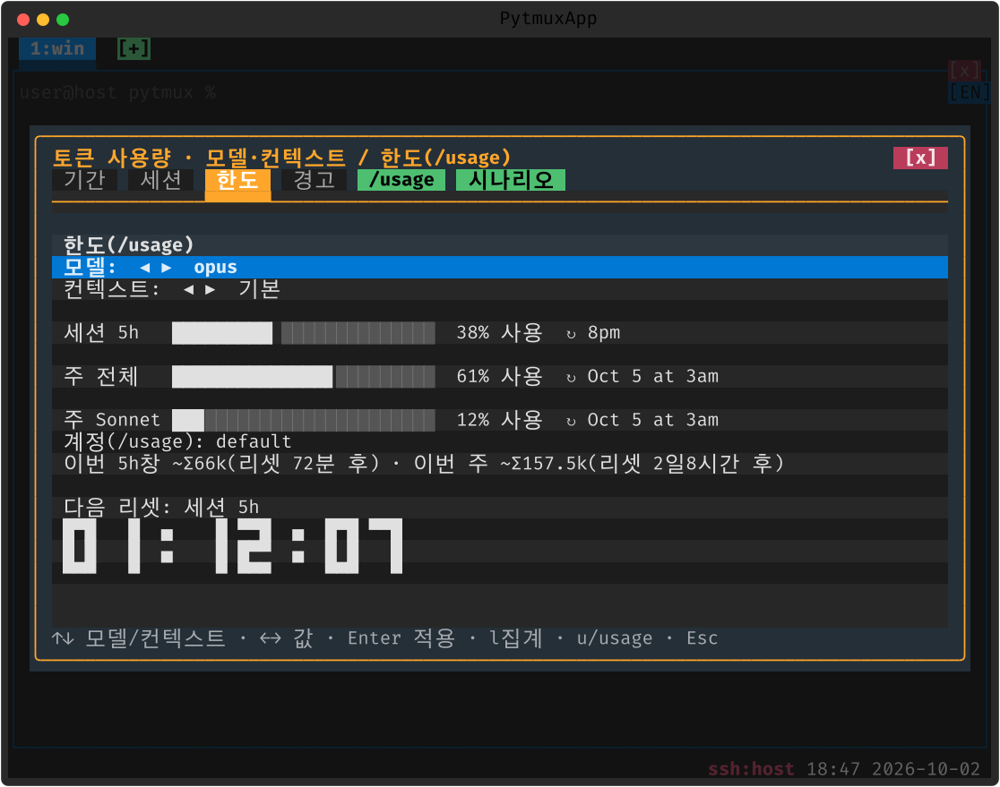

Claude Code 통합
토큰을 보고, 끊기면 다시 잇습니다
패널에서 돌리는 Claude Code 의 상태·토큰·한도를 상태줄과 팝업으로 한눈에.
상태 표시 + 권한 모드
실행 중인 탭에 상태 아이콘(대기 ○ / 처리중 ◐ / 리밋 멈춤 ⊘)을 표시하고, 비활성 탭 작업이 끝나면 탭 배경색으로 알립니다. 전송 오류로 멈추면 "계속" 을 넣어 이어 갑니다(한도 뒤 이어 가기는 Claude Code 가 스스로 합니다).
- 권한모드 footer 클릭 → auto / accept / default / plan 선택
- 진행을 막는 화면(조직 관리설정 승인)은 기본 선택 그대로 자동 통과

13 · 권한 모드 선택
토큰 사용량 팝업
상태줄의 토큰 배지를 클릭하면 기간 / 세션 / 한도 / 경고 노트북 탭과 [/usage] · [시나리오] 버튼으로 보는 사용량 팝업이 열립니다. 화면 스크랩이 아닌 ~/.claude/*.jsonl 트랜스크립트 회계로 cache_read 까지 정확히 집계합니다.
- 기간 뷰 — 월 → 주 → 일 → 시각 계층 트리로 시간 흐름을
- 세션 뷰 — Claude 세션별 합(탭:패널·타임스탬프)
- 한도 뷰 — /usage 실측 막대 + 리셋 카운트다운 시계 + 모델/컨텍스트 변경
- 머신 뷰 — 여러 컴퓨터의 사용량을 합쳤을 때만 붙는 탭(어느 컴퓨터가 얼마를 썼는지)



기간 · 세션 · 한도 탭
실제 Claude 패널에서
진짜 claude CLI 를 패널에서 돌리며 모델 배지, 프롬프트 이력 미리보기·점프, 작성창으로 쓴 긴 프롬프트 투입까지 그대로 동작합니다.
- 멀티라인 프롬프트 붙여넣기 · 이미지 붙여넣기 패스스루
- 프롬프트 히스토리 플러그인으로 보낸 프롬프트 점프
- CJK 모호폭 자동 감지(:set ambiguous-width auto)와 화면 깨짐 자동 완화(claude-auto-redraw)로 글자 겹침 방지

22 · 실 Claude 패널